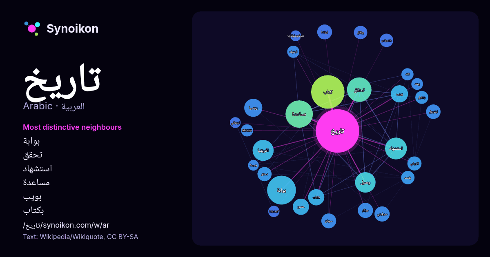

العربية · كلمة شائعة
تاريخ
“history” · الكلمات الموجودة حولها في 1211 ورودًا من ويكيبيديا, Wikiquote.

الجيران الأكثر تميّزًا
- بوابة 63×
- تحقق 44×
- استشهاد 43×
- مساعدة 36×
- بويب 29×
- بكتاب 25×
- كتاب 25×
- ليفربول 18×
- افريقيا 17×
- هندوراس 17×
- وصول 16×
- روسيا 16×
- يتناول 15×
- عصور 15×
- ايرلندا 15×
- سوفيتي 15×
- history 15×
- الفه 15×
- سودان 14×
- ارشيف 14×
× = كم مرة أكثر مما في نصوص ويكيبيديا العامة.
الجيران الأكثر تكرارًا
- كتاب 106
- بوابة 79
- مساعدة 71
- تحقق 57
- استشهاد 45
- افريقيا 42
- وصول 40
- اتحاد 37
- جنوب 34
- روسيا 31
- بويب 28
- علم 28
- نادي 26
- بكتاب 25
- عصور 25
- دولة 23
- بدا 22
- جزائر 22
- سوفيتي 22
- عالم 22
في السياق
- التَّارِيخ هو دراسة الماضي كما هو موصوف في الوثائق المكتوبة. الأحداث التي حدثت قبل السجلات المكتوبة تعتبر ما قبل التاريخ. «التاريخ»، هو مصطلح شامل يتعلق Wikipedia snippets · تاريخ
- الامبراطوري. "LacusCurtius • The Historia Augusta". مؤرشف من الأصل في 2024-03-16. اطلع عليه بتاريخ 2020-07-25. بوابة التاريخ بوابة روما القديمة بوابة كتب Wikipedia snippets · هستوريا أوغوستا
- في أواخر القرن الثامن عشر وأصبحت جزءًا من المملكة الإيطالية في القرن التاسع عشر. م في كومنز مواد ذات صلة بـ تاريخ تسكانة. بوابة إيطاليا بوابة التاريخ Wikipedia snippets · تاريخ تسكانة
- أفريقيا» : تاريخ جنوب إفريقيا: التاريخ الجنوب إفريقي. تاريخ جنوب إفريقيا (1652-1815) تاريخ جنوب إفريقيا (1815-1910) تاريخ جنوب إفريقيا (1910-1948) تاريخ جنوب Wikipedia snippets · تاريخ جنوب إفريقيا (توضيح)
- تاريخ الجزائر العام. كتاب في تاريخ الجزائر ألفه عبد الرحمن بن محمد الجيلالي نُشر سنة 1965 ضمه في مجلدين يحتوي على 758 صفحة. تطرق في الكتاب بشكل عام إلى Wikipedia snippets · تاريخ الجزائر العام (كتاب)
- الإمبراطورية الرومانية المقدسة بوابة ألمانيا بوابة شمال الراين-وستفاليا بوابة الإمبراطورية الألمانية بوابة التاريخ بوابة دوسلدورف بوابة أوروبا بوابة فرانكفورت Wikipedia snippets · قائمة الولايات التاريخية الألمانية
- تاريخ حماة هو أول كتاب مخصص يؤرخ لتاريخ مدينة حماة منذ نشأتها، ألفه أحمد الصابوني وأتمه في 1914 م. نشر لأول مرة عام 2011 عن دار سعيد العاص وطبع ثلاث مرات Wikipedia snippets · تاريخ حماة (كتاب)
- مختصر تاريخ دمشق تعديل - تعديل مصدري - تعديل ويكي بيانات مختصر تاريخ دمشق. هو كتاب صنفه ابن منظور اختصر كتاب تاريخ دمشق لـابن عساكر. قرأ ابن منظور الكتاب Wikipedia snippets · مختصر تاريخ دمشق (كتاب)
كلمات أخرى
- أغنية
- إله
- جبل
- جرس
- جزيرة
- جسر
- حديقة
- حصان
- حقيقة
- حياة
- خبز
- خريطة
- خريف
- ذهب
- زمن
- ساعة
- شاي
- شتاء
- صحة
- صحراء
- صمت
- صيف
- طبيعة
- طريق
- طعام
- ظل
- عائلة
- عاصفة
- عسل
- علم
- عمل
- غابة
- فن
- قطار
- قطة
- قلب
- قوة
- كلب
- لغة
- ماء
- مال
- مدينة
- مرآة
- مطر
- ملح
- مناخ
- موت
- نجم
- والدة
حُسبت مسبقًا في 2026-10-09 بالإعدادات الافتراضية (±5 كلمات، مدوّنة متوسطة). يمكن للخريطة التفاعلية تحديثها ببيانات حية.
واجهة مترجمة آليًا؛ نرحب بالتصحيحات.